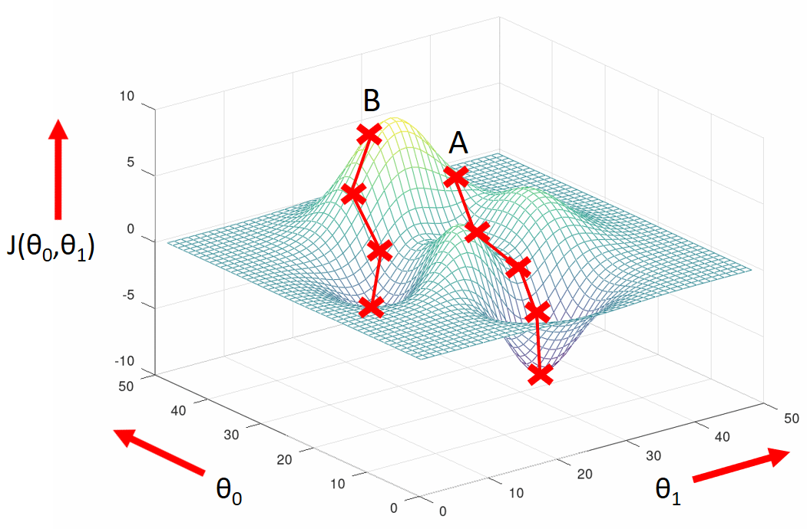
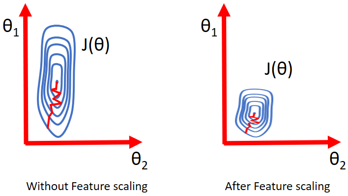
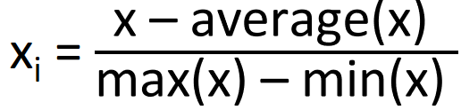
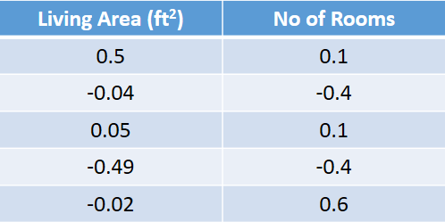
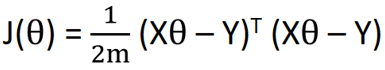
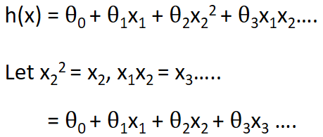

HOME BLOG EBOOKS ABOUT CONTACT SHOP
Before we start with the programming part, we will discuss some extra details regarding linear regression.
Earlier we said that gradient descent is carried out by initializing the parameters randomly. This is not entirely true, how we initialize the parameter does have an effect on what parameters we finally end up with after minimizing the cost function.

Almost all functions have local minimums i.e. points where the the slope or derivative is zero. But there is only one absolute minimum point (the lowest point on the graph). By carrying out the gradient descent, we are ideally aiming to get the parameter values corresponding to absolute minimum.
In the graph shown above, if we initialize the parameters to point A, we reach the absolute minimum point on performing the gradient descent. But instead if we chose to initialize the parameters to a different point B, we would not reach the absolute minimum point, we would only reach a local minimum. So where you start can determine which minimum you end up.
When you have multiple features in your problem, it is very handy if those features have a similar scale. For example, in our housing price problem, the first feature (living area) had values ranging from 0 to 2100 roughly and the second feature (no. of rooms) had values ranging from 1 to 5. The range of values in both features are very dissimilar. If you plot θ1 vs θ2, you can see that the graph is very elongated as shown in the first figure. The problem in such a case is that it would take a longer time to reach the minimum value. Now if you where to scale the features to almost a similar range, the plot would become more concentric, more circle like, making it easier to reach the minimum value.

One common method to scale features is using Mean Normalization:

Here’s our training data after mean normalization.

There are other ways to do feature scaling, but this is sort of the easiest way. Also, there is absolutely no compulsion to do feature scaling, it’s more of a practical trick than anything.

By nature of certain problems, the linear model may not be adequate. At other times, we may want to create new features out of existing features. For example, if radius was a feature of our problem, we may feel that area given by pi into radius square is a more appropriate feature. In all such cases, the polynomial model is more useful, but we can convert them to linear regression problems, by assigning the polynomial variables to new linear variable.

Feature scaling becomes even more important in this case.